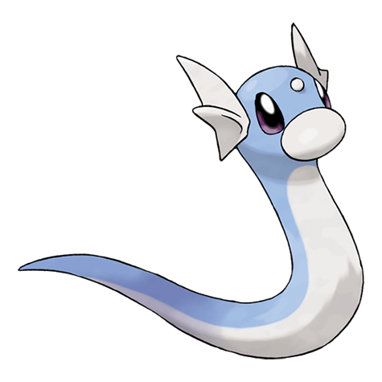

Назад
Ликитунг

Дратини — Покемон первого поколения под номером 147 в Покедекс. Обитает он в регионе Канто и относится к Драконему типу. Дратини постоянно линяет и выползает из своей старой кожи. Это происходит из-за того, что жизненная энергия в его теле постоянно вырастает до неконтролируемого уровня.
Тип:
Драконий
Эволюция
# 147 Дратини
=>
# 148 Драгонэйр